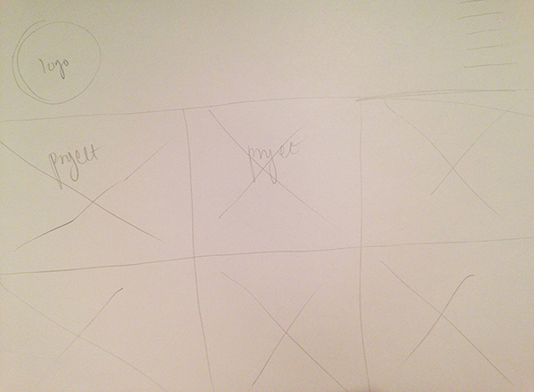

First Idea: Fixed main nav and projects open separate page with description and full photo. Projects take up full width 2 columns. Main nav on left in hamburger and folds out once scrolled over. Light, white, and clean
Second Idea: Fixed main nav with square project icons in 3 columns

Third Idea: Full page photo with logo in center or side with bottom nav
Fourth Idea: Masonry style with sidebar nav
About, Project, Contact pages
About page with my story, skills, option to download resume, photo of me etc.
Contact page with name, email, message, and send form
Project page with type, intro, fun facts, gritty details, full photo and other photos